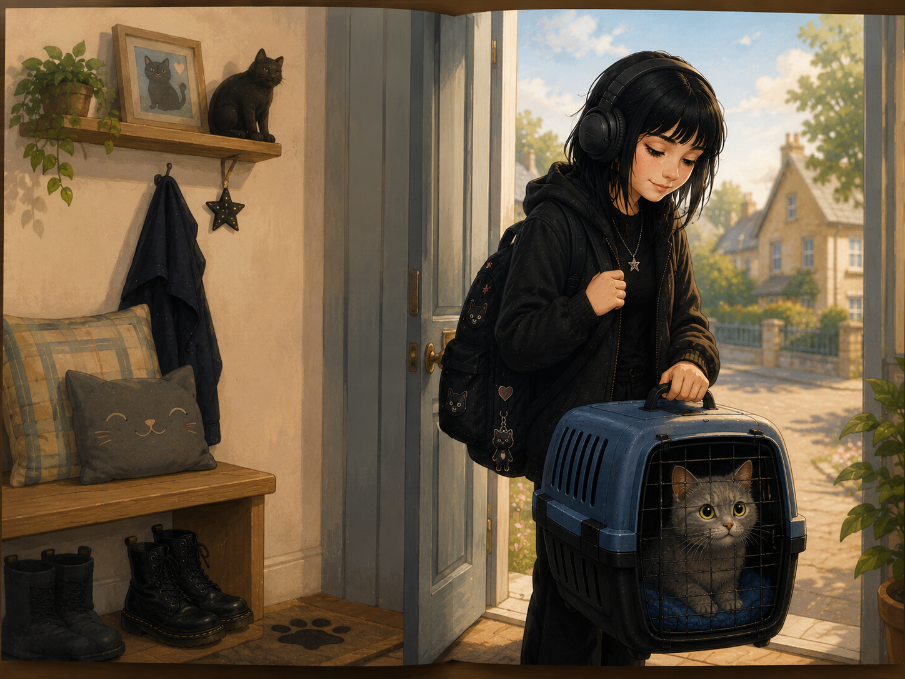
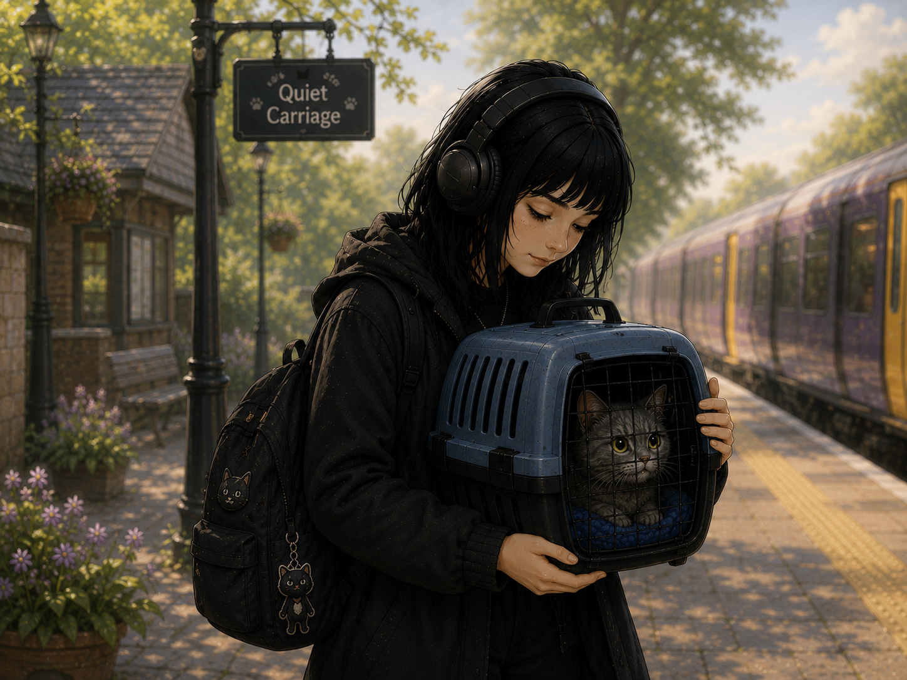
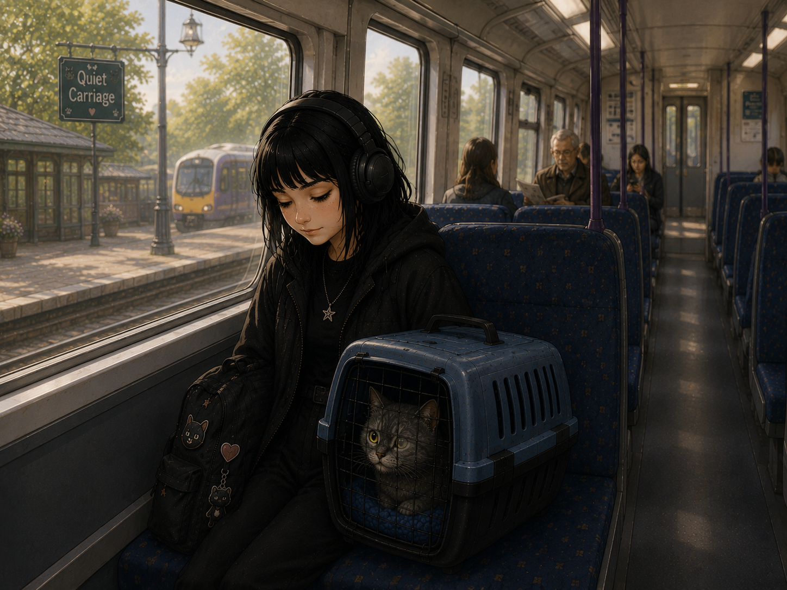
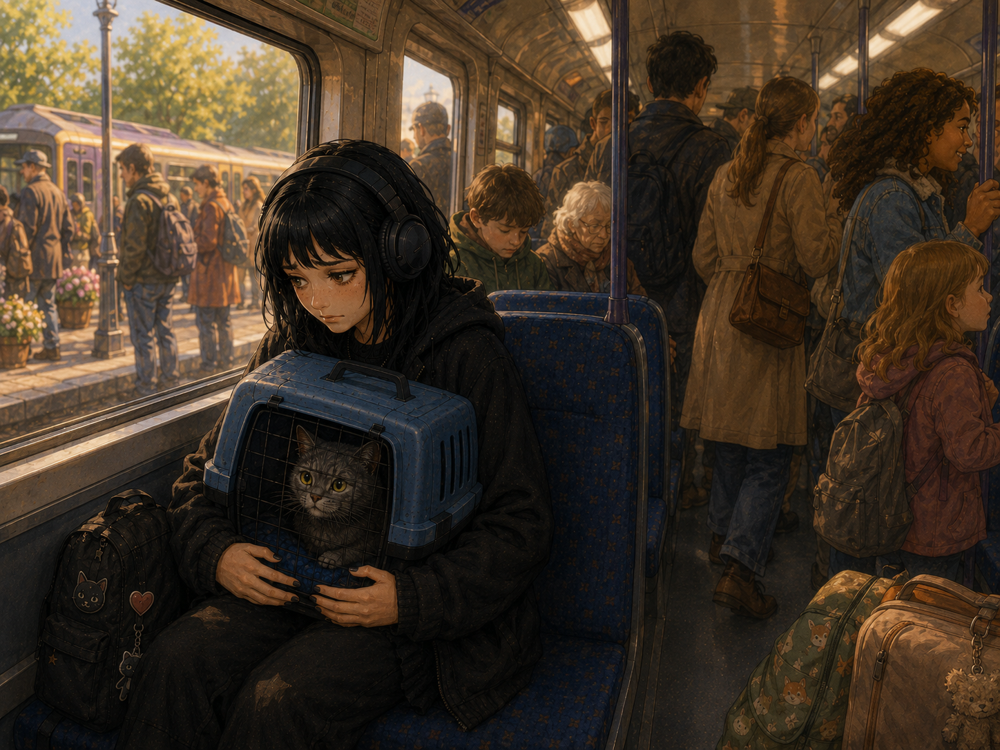
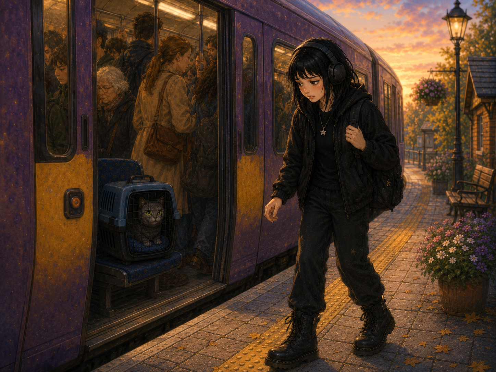
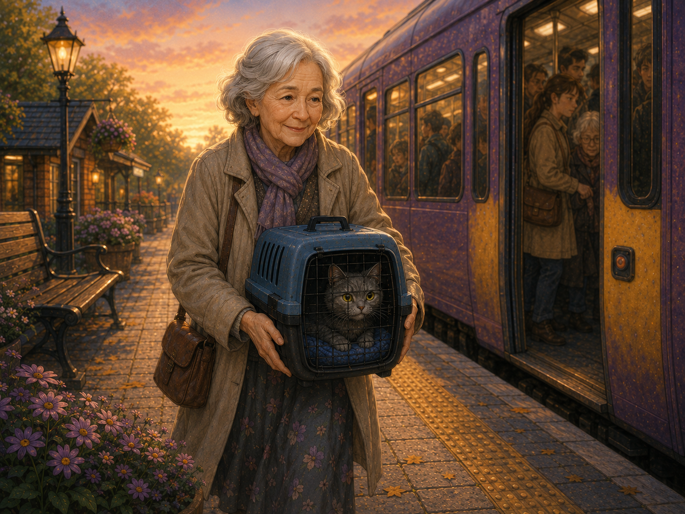
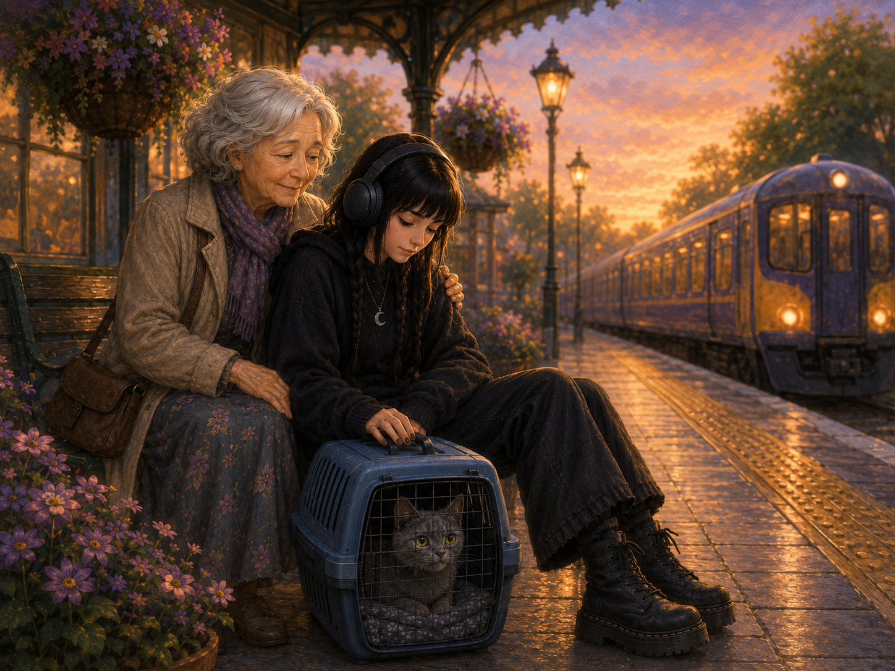
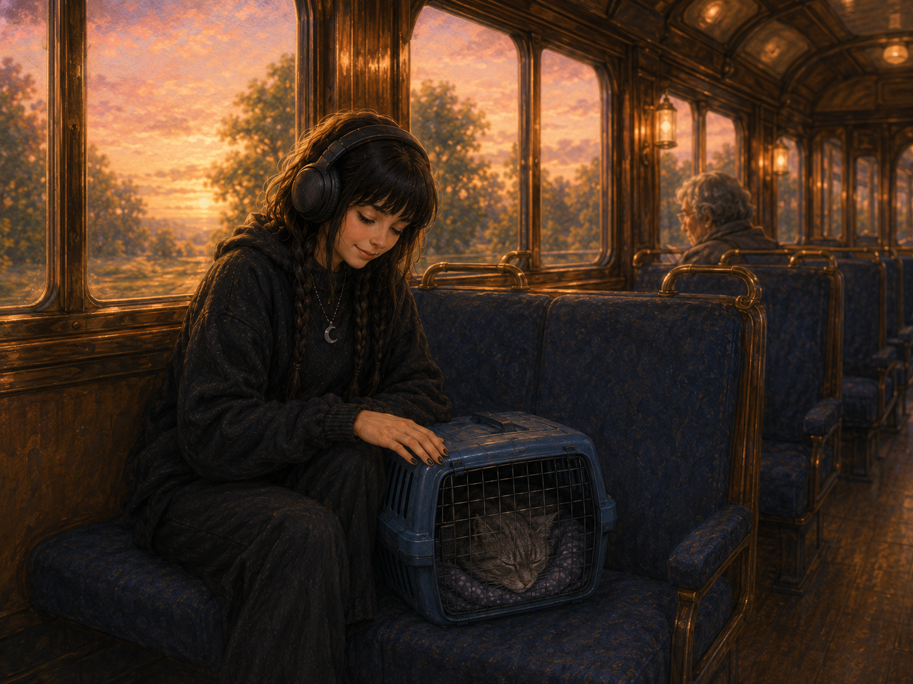
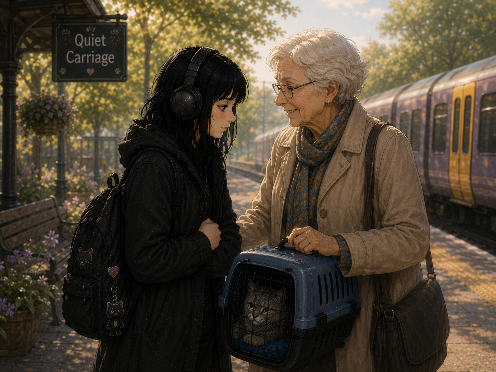

The little grey cat was going on an adventure.
Not to chase butterflies.
Not to visit neighbours.
Today it was going for its yearly visit to the vet.
Its favourite person was coming too.

She always wore her black coat and her noise-cancelling headphones.
She always carried the little grey cat very carefully.
And she always travelled when the trains were nice and quiet.
The little grey cat liked quiet places too.

The train arrived.
At first, there were only a few people.
The little grey cat looked out through its little window.
Everything felt calm.

Then, at the next station, everything changed. Lots of people climbed aboard.
Voices became louder.
The train became busier.
The little grey cat looked at its favourite person. She held the carrier a little tighter.

Everything suddenly felt too much.
The train was noisy.
People stood close together.
The little grey cat's favourite person quietly stepped off the train to find some space.
Then she looked down.
The little grey cat was still on the train.
The doors began to close.

An elderly lady picked up the carrier.
She had often seen the little grey cat and its favourite person travelling together.
She understood.
At the very next station, she stepped off the train with the little grey cat.

The little grey cat's favourite person was waiting on the platform.
She looked worried.
The kind lady smiled.
"It's alright," she said softly.
"We don't have to rush."
Together, they waited for the next train.
One that wasn't crowded.

The next train was quiet.
The little grey cat curled up inside its carrier.
Its favourite person smiled again.
Sometimes the best journey is the one taken when you're ready.

The little grey cat learned something new.
Sometimes people don't need someone to hurry them.
Sometimes they simply need someone who understands.
Something to think about
What helps you when somewhere becomes too busy or noisy?